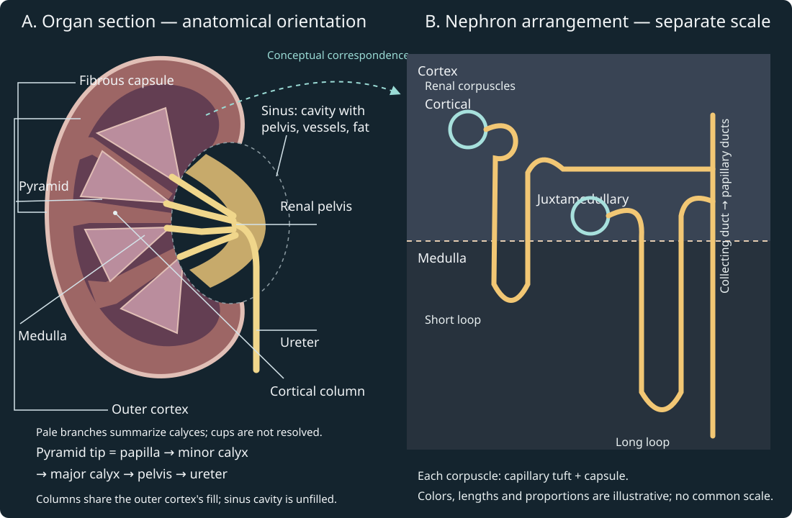

Original topology schematic. Geometry, colors and lengths are illustrative; this is a sequence of explanation, not measured travel time or a continuous anatomical zoom. The renal corpuscle is in cortex; the lower U-shaped loop extends into medulla.

The left section maps regional anatomy; the right compares nephron arrangements at a separate scale. The dotted correspondence is conceptual, not registered magnification. A renal corpuscle comprises capillary tuft plus capsule; the long juxtamedullary loop extends farther into medulla. The renal sinus is the internal cavity containing the pelvis, calyces, vessels and fat; the gold drainage path within it is not the sinus itself. Pale branches summarize the calyceal sequence without resolving individual cups. Cortical columns use the same fill as the outer cortex. Dimensions, region counts and colors are illustrative. Sources: gross anatomy and nephron anatomy. The pathway panel below separates blood from tubular fluid.
Static/print account: corpuscle in cortex; afferent→glomerular lumen→efferent is vascular. Across the wall, permitted filtrate reaches capsular space→proximal tubule→loop→distal tubule→collecting duct. The collecting system continues to papilla, calyces, pelvis and ureter. Twelve presentation seconds traverse four explanation phases; no physiological clock is assigned.